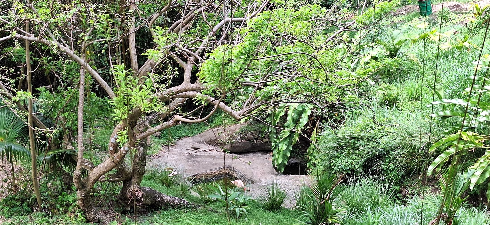

Première halte · eau vive
La Source
La visite commence par l'eau. Au cœur du domaine, la source rappelle que tout projet vivant part d'un équilibre simple : nourrir la terre, rafraîchir les cultures et accueillir celles et ceux qui arrivent.